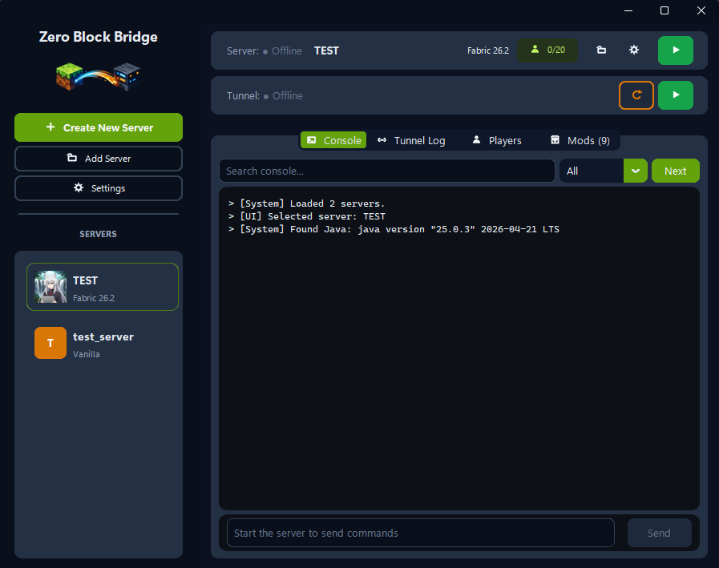

ZeroBlockBridge
Self-host your Minecraft server — crash detection, tunneling, backups and Java management, all without complex or time-consuming setups.
Making Minecraft server self-hosting easy
Click to reveal
Self-host your Minecraft server — crash detection, tunneling, backups and Java management, all without complex or time-consuming setups.
Making Minecraft server self-hosting easy
Click to reveal
From first boot to a running multiplayer world — ZBB handles it so you don't have to.
Detects crashes, zombie processes, and TPS lag spikes. Exponential backoff restarts keep your server alive — even when you're offline.
Integrated Playit.gg agent gives your server a permanent public address. No router config, no DynDNS — friends just type the address and join.
Reads bytecode from your server JAR to pick the exact Java version. Downloads the right JDK silently — never touches your system installation.
Search, install, and update mods directly from inside ZBB. Per-server mod lists, version picker, and one-click update checker.
80+ safe Minecraft commands on an explicit allowlist. Shell injection, pipe operators, and dangerous flags are blocked before reaching the JVM.
Full light/dark/system theme support with a live flip, plus a 5-tab Settings dialog for Discord webhooks, managed JDKs, and disk usage.
The real dashboard — server list, live console, and tunnel status at a glance.

Vanilla, Paper, Fabric, Forge, Purpur — choose version and loader. ZBB downloads the JAR and scaffolds server.properties automatically.
Java is resolved, eula.txt accepted, and the server launches with Aikar's GC flags — optimized out of the box. No terminal needed.
Playit tunnel activates. Copy the address, send it to friends. server.log streams live while ZBB keeps everything alive.
Windows may show a SmartScreen warning — the .exe isn't code-signed yet (indie dev, no budget for a cert). Click "More info" → "Run anyway", or check the source yourself first.
git clone https://github.com/DesvoSoft/ZeroBlockBridge.git
cd ZeroBlockBridge && pip install -r requirements.txt
py app/launcher.py
Everything you need to get a server running and keep it running.